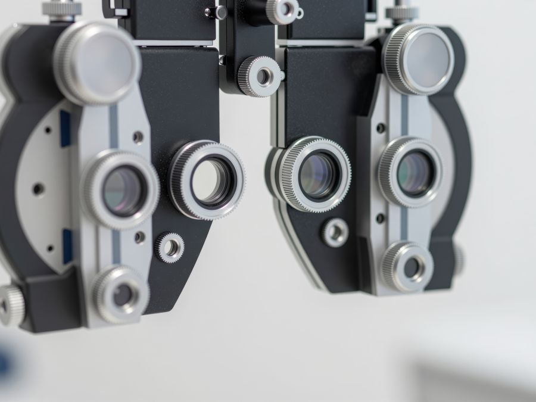
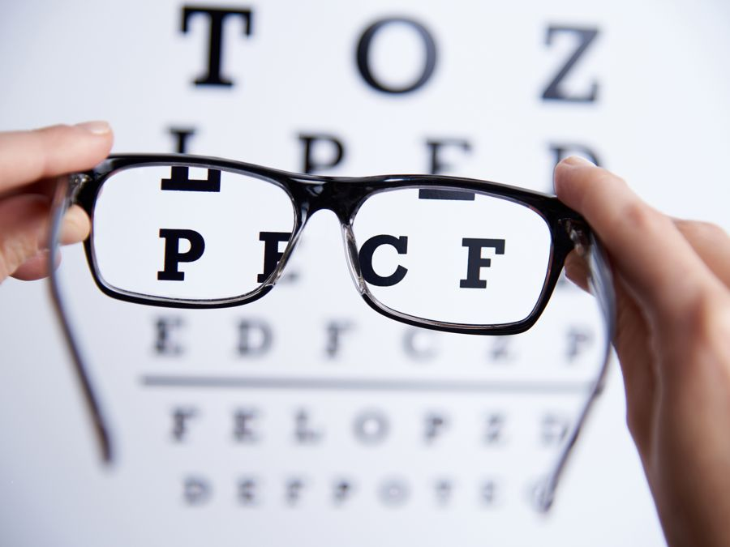
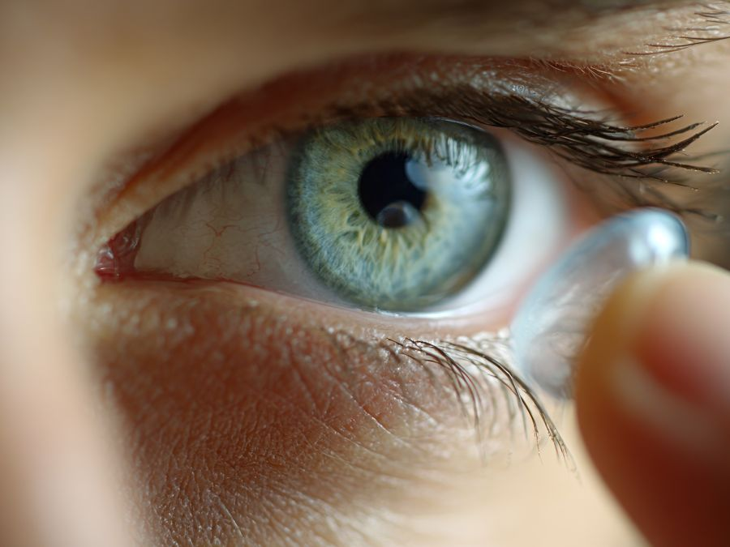

Dry-eye treatment
Assessment and treatment for eyes that feel dry, gritty or tired.
Book a dry-eye assessmentFrom routine vision tests to advanced screening, our team helps you understand your eye health and choose the right care.
Not sure? Call 07 5111 4488 and we’ll match you with the right person.

Routine vision tests check how clearly you see and whether your prescription needs updating. Our digital eye-testing equipment gives faster, more accurate results than a traditional eye chart.
10% off until 31 May

Two of our optometrists focus on children’s vision:

Choose stylish eyewear, sunglasses and specialty lenses that suit both function and fashion. Our lens specialist, Sarah Ravie, helps you find frames that are comfortable and suit your everyday needs.
Book a frame fitting
We measure your eyes, fit lenses for comfort and clear vision, and show you how to look after them day to day.
Book a contact lens fittingAssessment and treatment for eyes that feel dry, gritty or tired.
Book a dry-eye assessmentScreening for glaucoma, cataracts and macular degeneration, including OCT retinal scans. Patients with diabetes or high blood pressure should see Dr Alan Koya, who works with GPs and ophthalmologists.
Book an eye-health checkLooking for LASIK consultations, digital eye strain assessments or virtual consultations? See our new vision care technology.